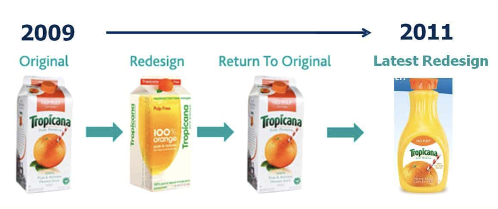
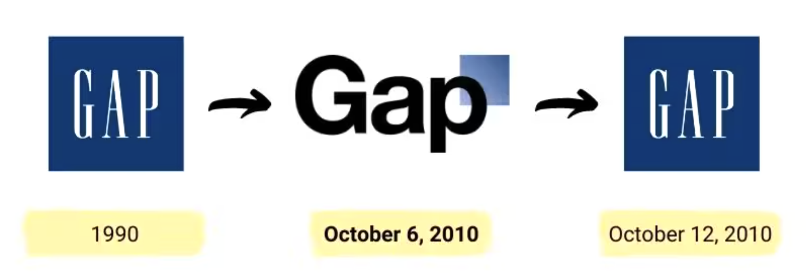
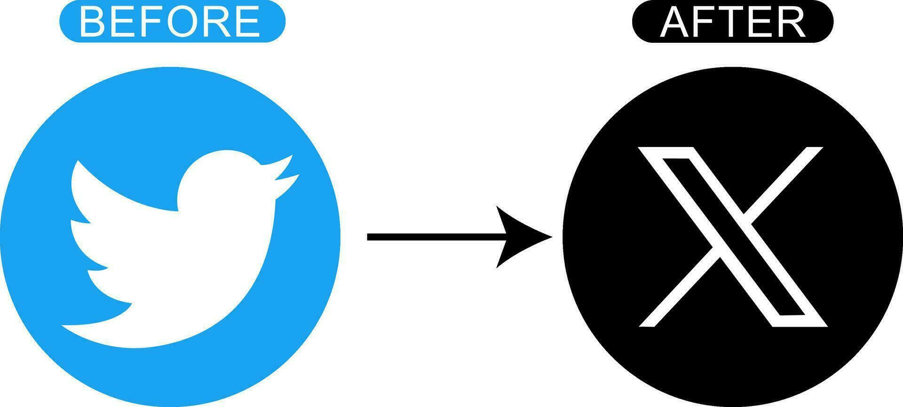

From Theory to Mechanics
Unit 2A installed a working definition of what a brand is, why it pays back, and what a small operation should take from the literature. The frameworks were the load-bearing part. The economics — CAC inflation, the 95-5 rule, the AI Overviews effect on brand-strong companies — were the part that closed the budget argument.
This unit is about execution. How brand equity actually gets built, what determines whether a new brand gets adopted by customers, how brand names are chosen (and why most of the famous ones came out of structured naming processes rather than founder inspiration), what the research actually says about logo design, and how repositioning works when it works.
Most of this material gets taught as a sequence of techniques. That framing understates how much of brand work is judgment, and how much of the judgment turns out to be about restraint. The naming firms that produce the best names also reject more than 99% of the candidates they generate. The launches that succeed do so partly by limiting how many things they ask the customer to figure out. The repositions that work are usually the ones where the company tells a clear story about why now, rather than pretending nothing happened. None of that is technique. All of it is discipline.
One more frame worth keeping in mind. Unit 2A argued that brand equity is the long-run output of the IMC system. Unit 2B is about the inputs. Everything in here — strategies, adoption mechanics, naming, identity, repositioning — is something the IMC system does to produce, maintain, or repair the equity Unit 2A described. The closer at the end of this unit pulls both parts back together.
How Brand Equity Actually Gets Built
The brand-management literature, somewhat usefully, sorts the strategies for building brand equity into three categories. The categories overlap at the edges. Most real brand programs use all three at once, in different mixes at different stages. But the distinctions are worth holding onto because each strategy implies a different kind of work, a different cost structure, and a different failure mode.
1.1 Speak-For-Itself, and Why Startups Overestimate It
The speak-for-itself school is dominant in startup culture. Build a great product, the argument goes, and customers will discover it, love it, and tell their friends. Word of mouth will do the marketing work. Money spent on advertising is money diverted from product development. This is not entirely wrong. There are real cases of products that grew almost exclusively through customer experience and recommendation — early Tesla, original Dropbox, Costco for fifteen years.
The cases that get cited are also survivorship bias on a heroic scale. For every Dropbox there are hundreds of products that built equally good experiences and disappeared because nobody ever heard of them. Word of mouth needs a critical mass of users to compound, and reaching that critical mass almost always requires some upstream investment to get customers in the door in the first place. The brands that "spoke for themselves" mostly spent years in obscurity before they were noticed, and the ones still in obscurity are not writing memoirs about their experience.
The more honest framing: speak-for-itself is an outcome, not a strategy. Brands that have built enough mental availability and product trust to grow on referral alone have earned that position through years of work that included communication. Skipping the communication and assuming the product will compensate is the most expensive mistake a new brand can make, because it shows up as runway burn with nothing to show for it.
1.2 Message-Driven, and Why It's Harder Than It Looks
The message-driven school is what most of advertising is. The brand commissions creative work that articulates its positioning, runs that work across paid media, and accumulates equity through repetition and consistency over time. This is the strategy that Apple has used since 1997, that Nike has used since 1988, that Coca-Cola has used since the late 1800s.
The reason it's harder than it looks is that message-driven equity is built slowly and erodes fast if you stop. The Binet and Field data from the IPA Effectiveness Databank, which Unit 1 referenced extensively, is essentially evidence that message-driven brand building has a half-life. Brands that maintain the work compound. Brands that pause to fund performance see the equity decay measurably within a year and visibly within two. The strategy works, but only if you are willing to fund it through the periods when its short-term metrics look worse than the performance alternatives. Most companies are not.
1.3 Leveraging, and the Underappreciated Move
Leveraging is the most undertaught of the three. The idea is that brand meaning, once accumulated somewhere, can be borrowed by attaching the new brand to the source. The leveraging hub has four standard sources.
Leveraging is undertaught because it requires admitting that your brand does not yet carry enough meaning on its own. Founders are bad at this admission. The marketing literature, written largely about successful brands looking back at their growth, tends to retrospectively narrate leveraging as if it were optional. It usually isn't. Most new brands that grow do so by attaching themselves to something larger and gradually transferring the borrowed meaning into proprietary equity. The brands that refuse to leverage often spend years explaining to customers what they stand for, when a partnership would have answered the question in a sentence.
The argumentative point worth holding onto: the three strategies are not a menu. A serious brand program uses all three. The product has to deliver on what the messaging promises, the messaging has to articulate what the product cannot, and the leveraging has to install meaning that the brand has not yet earned on its own. The strategies fail when they substitute for each other rather than reinforce each other.
- Three strategies build brand equity: speak-for-itself, message-driven, leveraging. A serious program uses all three.
- Speak-for-itself is an outcome, not a strategy. Brands that grow by referral alone usually got there through years of upstream communication work.
- Message-driven equity compounds slowly and decays fast. The brands that win are the ones willing to fund the work through periods when its short-term metrics look worse than performance alternatives.
- Leveraging — borrowing meaning from other brands, people, places, or things — is the most undertaught strategy because it requires admitting your brand does not yet carry enough meaning on its own. Most new brands cannot afford not to.
How New Brands Actually Get Adopted
Once you have a brand and a strategy, the question becomes whether customers will actually adopt it. The data on this is sobering. Estimates of new-brand failure rates range from 35 to 45 percent in consumer categories and higher in technology and durable goods, depending on how strictly you define "failure." That number has been roughly stable for decades despite continuous improvements in marketing tools, market research, and analytics. Whatever knowledge marketers have accumulated about launching brands, it has not yielded reliable success.
The dominant model for thinking about adoption is the three-stage funnel that descends from Everett Rogers' Diffusion of Innovations (1962) and has been adapted into countless marketing textbooks since. The stages are awareness, trial, and repeat purchase, and the model is useful because it isolates three distinct gates a new brand has to pass through, each of which fails for different reasons.
Awareness is the gate everyone focuses on. It is also the easiest to buy, because awareness is what mass-reach advertising is built to produce. Trial is harder, because turning a customer who knows about your brand into a customer who actually tries it requires reducing the perceived risk of the first purchase. Distribution presence, sampling, coupons, low-price introductory offers, money-back guarantees, and free trials all live here. Repeat purchase is the hardest, because nothing in the marketing budget can substitute for a product that delivers on what the brand promised. A brand that buys awareness, lubricates trial with discounts, and then disappoints on first use does not get a second chance.
2.1 Rogers' Five Characteristics
Beneath the three-stage funnel, Rogers identified five characteristics of a new product that predict how quickly it will be adopted. The five have held up well across sixty years of research, with some sharpening at the edges. They are worth knowing because they are the closest thing the literature has to a pre-launch diagnostic.
The standard exercise is to score a new product on each of the five characteristics, weight the scores by importance, and produce a total. The textbook calls this Importance × Evaluation scoring, and the exercise is worth running on any launch even if the final number is not what matters. The discipline of forcing yourself to evaluate the product on the five dimensions surfaces the weaknesses ahead of time, and the weaknesses are where launches fail.
2.2 The Honest Finding: Most Launches Die on Two of the Five
Here is the part the textbook does not emphasize enough. The five characteristics are listed as if they are equal predictors. They are not. When you go back through actual launch failures and ask which characteristic killed the launch, the answer is overwhelmingly one of two: complexity or trialability. Relative advantage, compatibility, and observability explain some failures, but they tend to explain failures retrospectively rather than predict them ahead of time.
The Tesla Cybertruck launch is a useful recent example. Relative advantage was real — the truck offered features competitors couldn't match. Observability was sky-high — the design was distinctive enough that owning one was an act of public statement. Compatibility was poor (the design didn't fit existing pickup-truck conventions), and complexity was high (the launch was beset by software issues, panel-fit problems, and feature delays), and trialability was low (a $100,000 purchase doesn't lend itself to casual evaluation). The launch underperformed not because Tesla failed at all five characteristics, but because it failed at the two that predict failure most reliably.
The Ozempic and Wegovy launches in the opposite direction. The semaglutide products had high relative advantage (weight loss outcomes substantially better than existing alternatives), reasonable compatibility (weekly injection, familiar to diabetic patients), low complexity (one drug, one dose, clear instructions), high trialability (insurance coverage made the first month effectively free for many patients), and extreme observability (a 40-pound weight loss is hard to miss in a customer's social network). Three of the five were strong, two were exceptional, and the products achieved adoption rates that pharmaceutical companies normally see over five years in less than 18 months.
The argumentative point: do the Importance × Evaluation exercise on any launch you are involved with, but weight complexity and trialability more heavily than the model suggests. The other three matter, but they are usually how you explain failure after the fact. Complexity and trialability are how you predict it.
- New-brand failure rates run 35-45% in consumer categories, with little improvement over decades despite better tools. The adoption problem is mostly unsolved.
- The Awareness → Trier → Repeater funnel isolates three distinct gates. Each fails for different reasons. Buying past one gate doesn't help with the next.
- Rogers' five characteristics — relative advantage, compatibility, complexity, trialability, observability — predict adoption rate. The Importance × Evaluation exercise is worth running on every launch.
- Most failed launches die on complexity or trialability. The other three characteristics explain failures retrospectively but predict them poorly.
Naming and Visual Identity
The brand name and the visual identity are the two assets a brand owns longest and changes least often. Most brand names outlast every other strategic decision the company makes. The name on the door when you start the business is usually the name on the building when you sell it forty years later. The logo, if you treat it with discipline, has a similar lifespan — adjusted for typography and design conventions, but recognizable across decades. Because of this longevity, the costs of getting them wrong are unusually high. The decisions feel small. They are not.
3.1 The Economics of Naming
The price of a professionally developed brand name from a top-tier naming firm runs from about three thousand dollars at the low end to seventy-five thousand at the high end, with most landing in the $25,000 to $50,000 range. That sounds like a lot for a few words on a slide. It is not. The brand-building investment that follows the name — advertising, packaging, signage, digital presence — runs into the tens of millions of dollars for a real consumer brand, and the equity that investment accumulates gets attached to the name. Getting the name right is the cheapest piece of work in the entire brand-building program. Getting it wrong is the most expensive.
The four functional requirements of a good brand name are well-established in the literature. A good name distinguishes the brand from competitors. It facilitates consumer learning about what the brand stands for. It achieves compatibility with the brand's desired image and the product's design and packaging. And it is memorable and easy to pronounce. These requirements are not equal in importance — distinctiveness usually matters most, pronounceability matters more than people think, and image compatibility is the one that gets most often violated. But all four are worth checking against.
3.2 How a Real Naming Process Runs: The Jaunt Story
It's worth walking through one real naming engagement to see what the process actually looks like, because the romance of "we just thought of it one day" is mostly invented for press releases. Most successful brand names came out of disciplined processes that generated thousands of candidates and rejected the overwhelming majority.
The case to look at is Jaunt, the virtual reality experience company that raised over $34 million on the strength of a VR film starring Paul McCartney. The investors had funded the company, but they had no name for it. They retained Anthony Shore, formerly of Landor Associates and Lexicon Branding, who runs a single-employee naming agency called Operative Words. The story of what Shore did is documented in the Andrews textbook, and it's worth reading because it shows how a professional naming process actually works.
Shore started by asking what he calls "the brief": what made the VR experience new, different, transporting, science-fictional. The investors wanted something short that conveyed speed and arrival. Shore worked through six creative buckets — change, entertainment, experience, immersion, presence, and a "wow" factor — and then turned to phonetics. Speed and smallness in English get conveyed by fricative consonants: f, s, v, z. Arrival, weight, and largeness get conveyed by plosive consonants: b, d, p, t. He used the Universal Text Combination app to generate a list of 7,500 names combining fricatives and plosives in different positions.
Shore then used onelook.com and rhymezone.com to filter the list down to 1,200 names by checking word associations and rhyme partners. He filtered again to 61 candidates that survived basic taste, pronounceability, and trademark screening. The shortlist included Virch, Amuzium, FarAcross, Thrall, Howl, Mezmer, Joyager, Jumpdoor, Livit, Lunge, Midst, Popover, Zyde, and Jaunt. The final review weighed semantic fit, trademark availability, cultural connotations across major markets, and investor preference. Jaunt won.
The point of the story is not that the name Jaunt is unusually brilliant. It is that the process by which it was chosen was unusually disciplined. Shore generated 7,500 candidates and rejected 7,499 of them. That ratio — generate broadly, reject ruthlessly — is what professional naming firms charge for. The founders who name their own companies in an afternoon are usually skipping the rejection step, which is where most of the value sits.
3.3 Sound Symbolism: Why Frosh Beats Frish
One piece of the naming research worth knowing about because it is consistently underappreciated: phonetic sounds carry meaning even when the words themselves are nonsense. This is the field called sound symbolism, and the experimental evidence has been replicated across languages and cultures for fifty years.
| Sound family | Connotation | Example brand names |
|---|---|---|
| Front vowels (e, i, ee) |
Small, light, fast, feminine, sharp, sleek | Bing, Mini, Tic Tac, Sprite, Fitbit, Kindle, Twitter |
| Back vowels (o, oo, u) |
Large, heavy, slow, masculine, rich, warm | Toyota, Costco, Hulu, Volvo, Google, Trump, GoPro |
| Fricatives (f, s, v, z) |
Speed, movement, lightness, friction | Visa, Zoom, Vans, Versace, Five Guys, Fender |
| Plosives (b, d, p, t, k, g) |
Weight, arrival, impact, stability | BMW, Coca-Cola, Pepsi, Reddit, Target, Kodak, Adidas |
The classic experimental demonstration: researchers presented subjects with two made-up brand names for ice cream — Frosh and Frish — and asked which sounded richer, creamier, and more luxurious. Frosh won by large margins, every time. The only difference is the vowel. Same letters around it. Same number of syllables. Same plosive at the end. Just the difference between a front vowel and a back vowel was enough to shift preference reliably.
This matters because most founders pick brand names based on what they mean rather than what they sound like. Meaning is one input. Sound is another, and it's an input that operates beneath conscious evaluation, which means even sophisticated focus-group testing may miss it. The professional naming firms test phonetics explicitly because the effects are real and the founder's intuition for them is usually wrong.
3.4 Three Naming Schools: Suggestive, Made-Up, Empty-Vessel
Brand names fall, roughly, into three families. Suggestive names directly imply what the product does or the benefit it offers. Post-it, Healthy Choice, Crocs (suggesting durability and water-resistance), Outback (for an SUV implying rugged terrain), Liquid-Plumr. These names do work for the customer by carrying their own meaning. The risk is that the meaning constrains the brand. A company named for a specific product feature has trouble extending into adjacent categories. Liquid-Plumr cannot stretch into hair care.
The made-up school constructs names from morphemes — the semantic building blocks of language — that suggest meaning without committing to it. Acura is built from accurate. Compaq was compact plus a hard ending. Verizon combines veritas and horizon. Microsoft joined microcomputer and software. These names are designed to feel meaningful without locking the brand into a specific product domain.
The empty-vessel school takes the opposite approach. The name is deliberately devoid of prior meaning, leaving the brand free to install whatever meaning the marketing creates. Exxon was computer-generated to be neutral across global markets — the company specifically wanted a name that had no existing associations in any language. Lucent (formerly Lucent Technologies, later Alcatel-Lucent) was chosen because lucent had limited semantic baggage. Kodak was invented from scratch by George Eastman in 1888 specifically because he wanted a name that didn't mean anything in any language.
The empty-vessel approach has an advantage that becomes obvious in hindsight: a name with no prior meaning never has to undo any associations. The brand teaches the customer what the name means, rather than competing with whatever the customer thought it meant before. The disadvantage is that empty-vessel names require sustained communication investment to install the meaning in the first place. They are expensive at the beginning and cheap forever after.
3.5 The Exceptions That Prove the Rules
Some of the most successful brand names in history violate every guideline in the literature. Häagen-Dazs is unpronounceable to English speakers, doesn't mean anything in any language (the name was invented in the Bronx in 1961 by Reuben Mattus to sound Danish), uses unusual spellings, and has accents that don't exist in English. By textbook scoring it should have failed. It is one of the most valuable premium ice cream brands in the world.
Leinenkugel's is a German surname that most American customers cannot spell or pronounce. Schick for razors is technically fine but has the same surname-origin issue. Yelp sounds like a dog injury. Wendy's was named after the founder's daughter, against the prevailing wisdom that family names should be avoided. None of these violate naming theory by accident — they violate it on purpose, and the brand survived because the violation became part of the brand's distinctiveness.
The lesson is not that the rules are wrong. The rules describe what works on average. The exceptions are brands that were memorable enough on other dimensions — taste, founder story, marketing creativity, sheer cultural luck — to overcome the naming disadvantages. If you can guarantee that level of creative execution downstream, you can name your brand anything. If you cannot, follow the rules.
3.6 The Five-Step Naming Process
The standard professional naming process has five steps, and the JetBlue story below illustrates why each of them matters.
JetBlue Airways, which launched in 2000, almost wasn't called JetBlue. The original operating name was New Air, a placeholder while the marketing team worked on the real name. The CEO had been clear about what he didn't want — no geographic destination like Southwest or Northeast, no made-up word like Lexus or Acura. The team considered Taxi, Gotham, Imagine Air, Yes!, and Fresh Air. Taxi was the favorite, because it was distinctive and would have enabled a yellow-and-black checker design on the tails. The Federal Aviation Administration killed Taxi because the verb describes what planes do on runways, and the FAA didn't want the term confused.
The next candidate was True Blue, after Landor Associates ran a formal process. The name was chosen, the design was developed, the launch was planned. Two weeks before launch, the team discovered that Thrifty Rent-a-Car had already trademarked True Blue for its customer service program. The mistake — failing to clear the name through trademark search before committing — was a Landor error that the marketing team paid for.
One week before the launch announcement, a member of the marketing team suggested JetBlue. The name had not been on any list. It cleared trademark search. It was short, easy to pronounce, distinctive in the airline category, and it preserved the blue palette and visual identity the team had already built. New Air became JetBlue Airways, and the airline launched on schedule. The story is a useful reminder that even disciplined naming processes can produce the final answer in the last week, and that the trademark step in the five-step process is non-negotiable even when the firm running your process is the most respected in the industry.
3.7 Logos and Visual Identity
If the brand name is the verbal anchor, the logo is the visual one. The logo functions as a shorthand identifier — a single asset that a customer can recognize at a glance, on a tiny app icon or a sixty-foot billboard, and that triggers the entire brand image stored in memory.
The research on what makes a logo work is surprisingly settled. Good logos share three properties: they are recognized readily by their target audience, they convey roughly the same meaning to all viewers, and they evoke positive feelings. The visual research, replicated across multiple studies, is that moderately elaborate designs outperform both overly simple and overly complex ones, and that natural designs — designs based on recognizable real-world objects — outperform purely abstract designs on most measures. Liking, recognition, and emotional response are all higher for the moderately-elaborate-natural quadrant than for any of the other three.
One of the more interesting cases is Betty Crocker, who is not a real person but a brand mascot created in 1921. The Betty Crocker face has been updated eight times across more than 95 years, with the most recent version, introduced in 1996, produced by digitally morphing photographs of 75 American women into a single composite. The composite was chosen specifically because it could not be traced to any single ethnic or regional source. The brand decided that universality was more important than specificity. Whether the bet paid off is debatable. What is not debatable is that the Betty Crocker face is recognized by approximately 75% of American consumers, a recognition level that the brand has maintained for a century by treating the visual identity as a long-term asset rather than a short-term creative project.
The trend over the past 15 years has been from angular logos toward rounded ones — Starbucks dropped its angular wordmark in 2011 in favor of the rounded siren mark; Pepsi simplified repeatedly; tech companies almost universally rounded their wordmarks during the same period. The research suggests cultural variation in reception: rounded logos play better in interdependent cultures (India, China, much of Asia) than they do in more independent Western markets. The wholesale convergence on rounded sans-serif typography in the late 2010s and early 2020s, however, produced the design phenomenon that Unit 2C is going to argue against: blanding, the homogenization of brand identity into a uniform minimal aesthetic. We will hold that argument for the third part. For now, the principle: rounded works, but variety works better, and stripping out distinctive elements to match the prevailing trend is a strategic mistake regardless of what the design press says.
3.8 When Identity Changes Go Wrong: Two Case Studies
The visual identity research is mostly theoretical. The two cases below are the cleanest financially-documented examples in the recent literature of what happens when a brand discards distinctive assets and the customer notices. Both happened within twenty months of each other, and both produced enough damage to land in every subsequent textbook treatment of brand identity.
Tropicana, 2009 — The Customer Cannot Find the Product

In early 2009, PepsiCo decided to modernize Tropicana Pure Premium — at the time a $700-million-a-year brand that had defined premium orange juice for two decades. The Arnell Group produced a redesign that replaced the iconic orange-with-a-straw image with a generic glass of juice, repositioned the wordmark vertically, and applied a minimalist treatment. The total investment in the redesign and supporting advertising was $35 million. The new packaging hit shelves on January 8, 2009.
Within two months, sales had dropped 20 percent — a $30 million loss in real revenue. Competitors picked up the displaced share. On February 23, 2009, just six weeks after launch, Tropicana announced it would revert to the original packaging. By the time the dust settled, the total cost of the failed rebrand exceeded $50 million.
What had happened was not aesthetic confusion. Customers were not buying Tropicana because they liked the packaging. They were navigating to Tropicana because the packaging was the recognition cue they had built up over twenty years of grocery store visits. The orange-with-a-straw was a distinctive brand asset in Sharp's terms — a piece of visual code that allowed buyers to identify the product instantly in a crowded juice aisle. When PepsiCo replaced it with a generic glass of orange juice, the asset was gone. Customers in stores looked at the shelf, didn't see Tropicana, and bought competitor brands. Some bought Tropicana by mistake and concluded the brand had been discontinued. The financial damage was almost entirely a recognition failure, and it showed up not as a vague reduction in brand equity but as immediate, quantifiable sales decline.
Tropicana eventually updated the packaging successfully — the 2011 introduction of the curved bottle preserved the orange-with-straw imagery while modernizing the form factor. The successful 2011 evolution is rarely discussed because the 2009 failure is more memorable, but the contrast demonstrates the operative principle: distinctive assets can be evolved, but they cannot be discarded.
Gap, 2010 — The Customer Tells You In Six Days

The Gap case is worth knowing as the textbook example of how fast a brand can lose the public on a visual identity change. In October 2010, Gap replaced its long-running serif wordmark — a distinctive asset that had identified the brand since 1990 — with a flat sans-serif design featuring a small offset blue square. The redesign was widely mocked on Twitter within hours, parodied across design blogs within days, and reversed by the company on October 12, six days after launch.
Estimates of the financial cost vary, but the consensus puts the total damage to Gap somewhere around $100 million in design fees, production costs, and reputational damage. The case is now used in design schools as the canonical demonstration of two things: that distinctive brand assets, once accumulated, cannot be replaced by committee in a board room without warning the customer; and that customers will tell you immediately when they think you have made a mistake, in detail, on every platform available to them. Gap had not asked customers what they thought of the old logo. The new logo arrived as a surprise. The customers had opinions, expressed them within hours, and were not wrong.
The pattern across both cases is the same. The brand assumed that customers would not notice a visual identity change, or would absorb it as a "modernization" they should appreciate. The customers noticed immediately, treated the change as a loss, and either left or complained loudly enough to force a reversal. The Sharp framework explains both outcomes: distinctive brand assets are the equipment customers use to find the product. Take the equipment away, even in pursuit of a "cleaner" or "more modern" aesthetic, and the cost shows up at the cash register.
Two brand guides worth bookmarking
For a working tour of how real brand guidelines look in 2026, two are available in the Canvas Unit 2 module. The Carhartt brand guide focuses on outdoor workwear identity — typography, photography conventions, color systems, tone of voice for marketing copy, and what to never do. The Burger King brand guide is the more interesting read because it documents the brand's deliberate 2021 reversion to a vintage palette and bolder display typography, restoring distinctive assets the brand had stripped out during its mid-2010s minimal phase.
The Burger King guide is especially worth studying as a counterexample to the blanding trend we will cover in Unit 2C. They leaned into character at exactly the moment their competitors were stripping it out, and the brand has been gaining attention ever since. The contrast between the two guides — Carhartt's quiet authenticity, Burger King's loud restoration — is instructive on the range of legitimate brand-identity strategies a serious brand can adopt.
3.9 The Legal Layer (Brief)
The legal protection of brand assets — trademarks, copyrights, patents, trade dress — is a real and important topic that we are going to cover properly in Unit 8 when we get to ethics, regulation, and the legal environment of marketing communications. Two things to flag in passing.
First, trademark protection in the United States is governed by the Lanham Act of 1946 and amended by the Federal Trademark Dilution Act of 1995. Trademarks last as long as the holder defends them through continuous use and renewal, which means a well-maintained trademark can last forever. The Coca-Cola wordmark has been a registered trademark since 1893. The risk that ends a trademark is not the clock; it is genericness — the brand becoming so dominant in its category that the name turns into the category itself. Aspirin, Escalator, Cellophane, Trampoline, and Thermos all started as protected trademarks and lost the protection when they became generic terms. Xerox spent decades aggressively reminding customers and journalists that "Xerox" is the brand and "photocopy" is the verb, specifically to avoid the same fate. Genericness is the marketing-success failure mode.
Second, trademark registration in foreign markets is a separate process from US registration, and the rules vary. In China, registration trumps prior use, which means brands that fail to register early in China can find their name owned by a squatter who beat them to the filing. Starbucks discovered this when they tried to enter China and found "Xian Bake" — the Chinese phonetic equivalent — already registered. We will return to all of this in Unit 8.
- Professional brand naming runs $3K–$75K for the name itself, against tens of millions in downstream brand investment that attaches to it. Getting the name right is the cheapest part of the program.
- The four functional requirements: distinguish from competition, facilitate learning, achieve image compatibility, be memorable and pronounceable. Distinctiveness usually matters most.
- Real naming processes generate thousands of candidates and reject 99%+ of them. The Jaunt process — 7,500 → 1,200 → 61 → 1 — is typical, not exceptional.
- Sound symbolism is real. Front vowels feel small and fast; back vowels feel large and heavy; fricatives feel quick; plosives feel weighty. Founders' intuition for these effects is usually wrong, which is why professional firms test phonetics explicitly.
- Three naming schools — suggestive, made-up, empty-vessel — each have trade-offs. Empty-vessel names are expensive to launch and cheap to maintain forever after.
- Logo research is settled: moderately elaborate beats simple-or-complex, natural beats abstract. The Betty Crocker face is the textbook longevity case; the Gap reversal is the textbook failure case.
- Trademarks last as long as you defend them. The risk is not the clock — it's genericness, the failure mode of becoming the category name.
Repositioning: When Brands Have to Change
A brand can be the most stable strategic asset a company owns. It can also be the asset most expensive to change, because the equity that took years to build is, in some real sense, what gets thrown away when the brand changes. Repositioning is the deliberate decision to discard some accumulated equity in exchange for new positioning the company believes is more valuable going forward. The question every repositioning faces is whether the trade is worth it.
The historical record is mixed. Some repositions land cleanly and the company comes out stronger. Others destroy value the company never recovers. The pattern that emerges from the cases is that the successful repositions usually share a structural feature the failed ones lack: a clear story about why now. The repositions that fail tend to pretend nothing has changed, expecting customers to absorb the change without comment.
4.1 The Three Reasons Brands Reposition
Real repositionings, looked at across the past decade, cluster into three causes. Each plays out differently.
Internal strategic change. The company has decided to be something different, and the brand needs to reflect the new direction. Facebook to Meta in 2021 is the cleanest recent example. The company was no longer primarily a social network; it was positioning itself as a metaverse infrastructure provider, and the name change signaled the pivot. Whether the metaverse bet pays off is a separate question. The repositioning worked as repositioning, because the story explained itself — the company was becoming something different, and the new name reflected the new thing.
External cultural pressure. The brand's existing identity has become socially untenable, and continuing to defend it carries reputational risk that exceeds the cost of changing. Aunt Jemima to Pearl Milling Company in 2021 is the textbook case. The brand had been built on a racialized caricature that the company had been quietly modernizing for decades, but by 2020 the modernization was no longer enough. The reposition was forced by cultural pressure, and Quaker Oats made the decision quickly enough to land it as a moment of accountability rather than a foot-dragging concession.
Declining sales or relevance. The brand is losing the market and needs a different identity to compete. Taco Bell's "Yo Quiero Taco Bell" to "Live Más" repositioning in 2012 is the classic example. The Chihuahua-era brand had aged out of relevance with younger customers. The "Live Más" repositioning, paired with menu and store changes, repositioned the brand from value-fast-food into lifestyle brand. Same parent company, same product category, dramatically different customer relationship.
4.2 The Cases at a Glance
| Year | Change | Why |
|---|---|---|
| 2010 | Washington Redskins → Washington Commanders (via "Football Team" interim) | External cultural pressure. Sponsor exit accelerated the timeline. Two-year interim period was a strategic mistake. |
| 2012 | Taco Bell "Yo Quiero" → Taco Bell "Live Más" | Declining relevance with younger customers. Paired with menu and store redesign. Brand reframed from value-fast-food into lifestyle. |
| 2015 | Gucci (Tom Ford-era) → Gucci (Alessandro Michele era) | Declining relevance in luxury. Maximalist aesthetic revolution. Worked spectacularly through 2022, then unwound; Michele was replaced in 2023. |
| 2020 | Aunt Jemima → Pearl Milling Company | External cultural pressure. Quaker moved fast and reframed it as accountability. Clean execution. |
| 2021 | Facebook (corporate) → Meta | Internal strategic change. Signaled metaverse pivot. The brand story explained itself. |
| 2022 | Cleveland Indians → Cleveland Guardians | External cultural pressure. Decades of Native American protest finally landed. Brand stayed within the city. |
| 2023 | Twitter → X | Internal strategic change driven by ownership preference. Threw away one of the most distinctive brand assets in social media. Cautionary case. |
4.3 The Gucci Counter-Pattern: A Reposition That Worked, Then Unwound
The reposition table is dominated by name changes, which can obscure that some of the most consequential repositionings are aesthetic and creative rather than nominative. Gucci is the cleanest recent case of a successful brand reinvention that then ran out of cultural momentum, and it's worth pausing on because the binary "success or failure" framing in most textbook treatments oversimplifies what actually happens.
Gucci in 2015 was a luxury house in slow decline. The Tom Ford era — bold, sexual, hard-edged — had ended in 2004, and the brand had spent a decade losing relevance with younger luxury buyers. Frida Giannini's tenure produced solid but unremarkable collections. Sales were flat in a category where flat means losing. In January 2015, Kering appointed Alessandro Michele as creative director. Michele's first collection, produced in five days, replaced almost every element of Gucci's existing aesthetic: maximalism replaced minimalism, geek-romantic replaced sleek-sexy, layered prints replaced clean silhouettes, mismatched eras replaced consistent ones. The brand's distinctive assets — the green-red-green stripe, the GG monogram, the horsebit motif — were preserved and amplified rather than discarded.
The result was one of the fastest luxury brand recoveries in modern history. Gucci's revenue grew from approximately €3.5 billion in 2014 to approximately €9.6 billion in 2022. Michele was credited with reinventing not just Gucci but the broader category, and competing houses spent years copying the maximalist approach. By any reasonable measure, the reposition was a triumph.
And then, between 2022 and 2023, the aesthetic ran out. Maximalism became expected rather than surprising. Younger luxury buyers shifted toward quiet-luxury cues. Gucci's growth stalled, then reversed. Kering replaced Michele in 2023 with Sabato De Sarno, whose first collections aggressively pulled the brand back toward minimal-luxury restraint. The reposition that had worked spectacularly for eight years had unwound.
The lesson is not that Michele was wrong. The lesson is that no reposition is permanent. Cultural cycles move. The aesthetic that defines a brand for a decade can become the aesthetic that drags it down in the eleventh year. Brands that understand this build flexibility into their distinctive-asset architecture — the GG monogram and the green-red-green stripe survived Michele's era and will survive De Sarno's, even as everything around them changes. The assets are the through-line. The reposition is the chapter.
4.4 The Twitter / X Case: How to Destroy a Brand on Purpose

The Twitter to X reposition deserves a longer look because it shows what happens when a reposition is driven by ownership preference rather than strategic necessity, and because it produced the largest measured single-event destruction of brand equity in recent history.
Twitter, by 2022, had one of the strongest distinctive-brand-asset portfolios of any technology company. The blue bird was iconic. The verb "to tweet" had entered standard English. The platform's name was a household word in dozens of countries. Brand Finance estimated Twitter's brand value at approximately $20 billion before the acquisition. When Elon Musk rebranded the platform to X in July 2023, every one of these assets was thrown away. The bird was retired. The verb "tweet" was officially deprecated. The name "Twitter" was replaced with a single letter that already meant several other things in technology and culture, including but not limited to a long-running adult content category.
By most published estimates, X's brand value within twelve months of the change had fallen by 50 to 70 percent. Advertiser spending dropped substantially. User behavior continued to refer to "tweets" out of muscle memory. The platform retained a similar user base — though it has declined steadily — but the brand asset it once held was largely destroyed. From a Sharp framework perspective, the case is instructive: the platform had spent fifteen years building memory structures and distinctive assets that were essentially priceless, and the rebrand zeroed them out in a single day. The replacement assets — a single letter X, a black-and-white color palette — were generic in a way the originals never were.
The cautionary lesson is not that repositions are bad. Some are necessary and some are overdue. The Twitter-to-X case is the inverse: a reposition driven by personal preference, executed without a story that explained why the customer should accept the change, that destroyed equity faster than any external attack could have done. The Sharp framework would say that distinctive brand assets, once you have them, are worth defending with extreme caution. The Twitter case is what happens when that caution is absent.
4.5 What Makes Repositioning Work
From the cases, the pattern is consistent enough to summarize. Successful repositions share three properties: a clear story about why now, decisive execution that doesn't drag the change out over multiple cycles, and preservation of whatever distinctive brand assets are still working (color palette, voice, customer rituals) even when the name or visual identity changes. Failed repositions usually violate at least one of these. They either fail to explain the change, drag it out across two or three years of half-measures, or throw away assets that should have been preserved.
The brand decision a company faces when considering a reposition is essentially an asset-management problem. The accumulated equity is the asset. The reposition decision is whether to discard it, partially refurbish it, or fully replace it. Most repositions that succeed do partial refurbishment — keeping the assets that work, replacing the ones that no longer fit, and telling a clear story about why the change makes sense. Most repositions that fail do full replacement under the assumption that customers will not notice. They do notice, and they are not always forgiving.
- Repositioning trades accumulated brand equity for new positioning the company believes is more valuable. The question is whether the trade is worth it.
- Three causes drive repositions: internal strategic change, external cultural pressure, declining sales or relevance. Each plays out differently and each has different success criteria.
- Successful repositions tell a clear story about why now, execute decisively, and preserve distinctive brand assets that still work. Failed repositions pretend nothing has changed.
- The Twitter-to-X case is the canonical recent example of value destruction. The blue bird, the verb "tweet," and the brand name itself were among the most valuable distinctive assets in technology. They were discarded in one day, with measurable equity loss in the tens of billions.
What You Should Be Able to Do Now
Across Parts A and B, you have installed a working vocabulary for branding that goes well beyond what most introductory marketing courses provide. The list of things you should now be able to do is short, but each item is load-bearing.
You should be able to define a brand mechanically, not metaphorically. A brand is the set of memory structures and distinctive assets that surface at the moment of category consideration. Mental availability, distinctive brand assets, and category entry points are the three operative components. Anything that doesn't cash out in one of those three is decoration.
You should be able to argue the economic case for brand investment when a CFO challenges it. Strong brands lower CAC, raise LTV, win citation in AI Overviews, and sell for 1.5× annual revenue or more, against 0.2–0.5× for unbranded equivalents. The 95-5 rule explains why: performance marketing reaches the 5% in-market today; brand marketing seeds the 95% who will be in-market later. The choice between the two is not really a choice. The honest answer is both, in proportions that depend on the brand's lifecycle stage.
You should be able to distinguish brand identity from brand image, recognize that the gap between them is where most branding work succeeds or fails, and understand why the McDonald's carrot study is the cleanest empirical demonstration of brand image in the research record.
You should be able to diagnose a brand-building program for the three strategies — speak-for-itself, message-driven, leveraging — and identify which are doing real work and which are being assumed. You should be able to point out when a brand is overusing one strategy at the expense of the others, particularly when a startup is leaning hard on speak-for-itself without doing the upstream communication work that makes it possible.
You should be able to evaluate a launch against Rogers' five characteristics, with extra weight on complexity and trialability because that is where most launches actually die. The Importance × Evaluation exercise is worth running on any new-brand launch you are involved with.
You should be able to recognize good and bad naming work, understand the difference between suggestive, made-up, and empty-vessel naming schools, and have some sense of why phonetics matter even when the customer cannot articulate why one name feels better than another. You should never let a brand launch a name without trademark clearance, even when the firm running the naming process is supposedly the best in the industry.
You should be able to read a repositioning, ask which of the three causes is driving it, and assess whether the company is telling a clear story about why now or hoping the customer won't notice. You should be able to spot a Twitter-to-X-style asset destruction and call it what it is.
Unit 2C applies the framework to a specific contemporary debate. Between roughly 2015 and 2022, much of the design industry decided that brands should look less like brands. The trend — now widely called blanding — produced enough damage to be worth analyzing on its own terms, and enough cultural pressure from Gen Z preference signals that the underlying mistake is worth understanding even if the trend reverses entirely. Read on.
More Views
The list below is for students who want to go deeper on the practical side of brand-building covered in this part. Articles, working notes, and a video. None of these are textbook treatments. All are written by practitioners or journalists who are arguing for something specific, and reading them will sharpen your own thinking even when you disagree.
The most detailed open-access analysis of the 2009 Tropicana case, including the financial math, the design choices Arnell Group made, and what the brand team got wrong about its own distinctive assets. Useful complement to the case discussion in Section 3.
The professional blog of the naming consultant who developed the Jaunt VR name. Working notes from a practicing naming firm — case studies, methodology, and unusually clear writing on what makes a brand name work. Probably the only place online where you can read about real naming engagements without the marketing-firm pitch deck wrapping.
Brand Finance's annual ranking and methodology notes on the world's most valuable brands, including their published estimates of brand value destruction at X. The methodology section is worth reading if you want to understand how brand value gets estimated in practice rather than in theory.
Coverage of the 2021 Burger King restoration to its 1969-era vintage palette and bolder typography. Worth reading as the rare case study of a major brand explicitly reversing the blanding trend — and getting credit for it. Setup material for Unit 2C.
The author of The Brand Gap has dozens of short talks on YouTube, most under 20 minutes. Search "Marty Neumeier brand" for current versions. Useful if reading is not your preferred format — Neumeier articulates the customer-perception side of brand more clearly than anyone else writing for general audiences.
Glossary
Curated terms used in this part of the unit. Definitions are one sentence, intended for review rather than substitution for the section that introduced the term.
- Speak-for-itself strategy
- Building brand equity primarily through customers' direct experience of the product and the word-of-mouth that follows.
- Message-driven strategy
- Building brand equity through repeated communication of attributes, benefits, and emotional positioning via paid media.
- Leveraging strategy
- Building brand equity by attaching the brand to existing positive meaning from other brands, people, places, or things.
- Co-branding
- An alliance between two brands in which each carries associations the other lacks (e.g., Visa with airline frequent-flyer programs).
- Ingredient branding
- A form of co-branding in which one brand is featured as a named component of another brand's product (e.g., Intel Inside, Gore-Tex).
- Country of origin
- The leverage a brand obtains from its association with a country whose reputation in the category is itself an asset (e.g., Italian fashion, German automotive).
- Brand adoption process
- The sequence by which customers move from unaware of a new brand to repeat purchasers, usually modeled as Awareness → Trier → Repeater.
- Awareness class
- The subset of category buyers who know that a new brand exists, the first gate in the adoption funnel.
- Trier class
- The subset of aware customers who have actually purchased the brand at least once, the second gate in the adoption funnel.
- Repeater class
- The subset of triers who buy the brand again, indicating that the product delivered enough satisfaction to justify continued purchase.
- Rogers' five characteristics
- The five product attributes that predict adoption rate: relative advantage, compatibility, complexity, trialability, observability.
- Relative advantage
- How much better a new product is than what the customer is currently using, one of Rogers' five adoption predictors.
- Trialability
- How easily a customer can try a new product with low risk; one of the two characteristics that most reliably predicts launch failure when it is low.
- Complexity
- How hard a new product is to understand and use; one of the two characteristics that most reliably predicts launch failure when it is high.
- Importance × Evaluation scoring
- The diagnostic exercise of scoring a new product on each of Rogers' five characteristics and weighting by importance to estimate adoption probability.
- Sound symbolism
- The phenomenon in which the phonetic properties of a word carry meaning independent of the word's literal definition, used systematically in professional brand naming.
- Fricatives
- Consonants formed by air friction (f, s, v, z), associated with speed, movement, and lightness in brand-naming applications.
- Plosives
- Consonants formed by stopping and releasing airflow (b, d, p, t, k, g), associated with weight, arrival, and impact in brand-naming applications.
- Suggestive name
- A brand name that directly implies the product's function or benefit (e.g., Post-it, Healthy Choice, Liquid-Plumr).
- Made-up name
- A brand name constructed from morphemes that suggest meaning without committing to a specific product domain (e.g., Acura, Verizon, Microsoft).
- Empty-vessel name
- A brand name deliberately devoid of prior meaning, leaving the brand free to install whatever meaning the marketing creates (e.g., Exxon, Kodak).
- Trademark
- A legal protection on a brand name, logo, or other distinctive identifier that lasts as long as the holder defends it through continuous use and renewal.
- Trade dress
- The legally protectable appearance and image of a product — packaging, color, shape, sounds — distinct from the brand name and logo.
- Genericness
- The failure mode in which a brand becomes so dominant in its category that the name turns into the generic term for the category itself (e.g., Aspirin, Escalator, Cellophane).
- Repositioning
- The deliberate decision to discard some accumulated brand equity in exchange for new positioning the company believes is more valuable going forward.